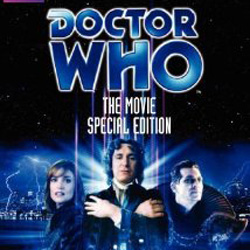

|
1996 FilmThere are two Doctor Who feature films: Dr. Who and the Daleks, released in 1965 and Daleks – Invasion Earth: 2150 A.D. in 1966. Both are retellings of existing television stories (specifically, the first two Dalek serials, The Daleks and The Dalek Invasion of Earth respectively) with a larger budget and alterations to the series concept. In these films, Peter Cushing plays a human scientist[131] named "Dr. Who", who travels with his granddaughter and niece and other companions in a time machine he has invented. The Cushing version of the character reappears in both comic strips and a short story, the latter attempting to reconcile the film continuity with that of the series. |
|
Julia Schwartz Ann Marie Skjold |
Content derived from the Doctor Who Wikipedia |